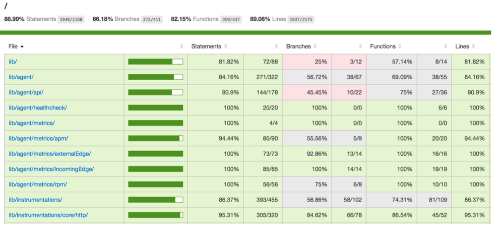

+

Jasmine - это инструмент для определения тестов в стиле BDD.
Karma - test-runner для JavaScript.
Документация: https://jasmine.github.io/api/2.8/global
Документация: https://karma-runner.github.io/1.0/index.html
Вы можете рассматривать тесты как гарантии надёжности ваших приложений. Они будут запускаться не только на вашей локальной машине, но и на CI-сервисах, чтобы сломанные сборки не попадали в продакшен.
«Тесты — это больше, чем просто гарантии, они обеспечивают живую документацию для вашей кодовой базы».
Ответ варьируется, но, как правило, вы можете следовать рекомендациям, установленным пирамидой тестирования.
В основном выделяется три типа тестирования
Также существуют разные подходы (методологии, структуры) BDD, TDD, TLD.
Каждый модульный тест имеет следующую структуру:
В каждом модульном тесте должна проверяться только одна проблема.
Если мы явно видим, что тест включает в себя совершенно независимые проверки – лучше разбить его на два более простых и наглядных.
describe('Calculator class', () => {it('получаем сумму аргументов', () => {const calculator = new Calculator();const sum = calculator.add(1, 4);expect(sum).toBe(5);});...});
Сравнение фреймворков для unit тестирования https://goo.gl/7C8YGo
Прежде чем приступить к практике модульного тестирования, давайте разберёмся, что такое шпионы, стабы (заглушки) и моки!
Вы можете использовать шпионов для получения информации о вызовах функций, например, сколько раз они были вызваны или какие аргументы были им переданы.
it('postmessage, frod or session end', () => {spyOn(CertificatePageEvents, 'trigger');...cardView.postMessage({originalEvent: {data: 'purchase:card:fail'}});...expect(CertificatePageEvents.trigger.calls.allArgs()).toEqual([['certificateView:cardbind'], ['billing:payment:errorModalOpen', errorModalData]]);})
Стабы похожи на шпионов, но они заменяют целевую функцию. Вы можете использовать стабы для управления поведением метода, чтобы форсировать какие-то события в коде (например, выброс ошибки) или предотвратить вызовы внешних ресурсов (таких как HTTP API).
it('calls all subscribers, even if there are exceptions', function (){var message = 'an example message'var error = 'an example error message'var stub = sinon.stub().throws()var spy1 = sinon.spy()var spy2 = sinon.spy()PubSub.subscribe(message, stub)PubSub.subscribe(message, spy1)PubSub.subscribe(message, spy2)PubSub.publishSync(message, undefined)assert(spy1.called)assert(spy2.called)assert(stub.calledBefore(spy1))})// Пример взят из документации Sinon: http://sinonjs.org/docs/
Моки — это поддельные методы с заранее запрограммированным поведением и соглашениями.
it('calls all subscribers when exceptions happen', function () {var myAPI = {method: function () {}}var spy = sinon.spy()var mock = sinon.mock(myAPI)mock.expects("method").once().throws()PubSub.subscribe("message", myAPI.method)PubSub.subscribe("message", spy)PubSub.publishSync("message", undefined)mock.verify()assert(spy.calledOnce)})// Пример взят из документации Sinon: http://sinonjs.org/docs/
Чтобы лучше понять, насколько хорошо ваша кодовая база покрыта тестами, вы можете сгенерировать отчёт о покрытии.

Jasmine - это инструмент для определения тестов в стиле BDD.
Karma - test-runner для JavaScript.
Документация: https://jasmine.github.io/api/2.8/global
Документация: https://karma-runner.github.io/1.0/index.html
Даже если какое-то изменение потенциально может порушить всё – его совершенно не страшно сделать. Ведь есть масса тестов, которые быстро и в автоматическом режиме проверят работу кода. И если что-то падает, то это можно будет легко локализовать и поправить.